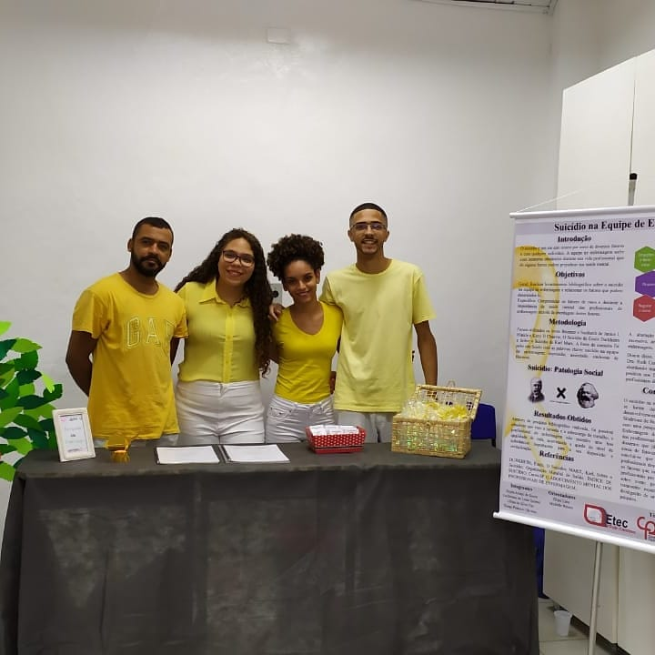

10 de Dezembro de 2019
TCC do curso de Técnico em Enfermagem

Neste dia, finalizei o curso de técnico em enfermagem com este TCC
abordando o tema "Suicídio na Equipe de Enfermagem". O grupo, formado
por meus amigos, Guilherme Lima, Dayra Araújo e Lillian da Silva, em
respectiva ordem, foram importantes na minha formação acadêmica e
agradeço por todas as noites de estudo.